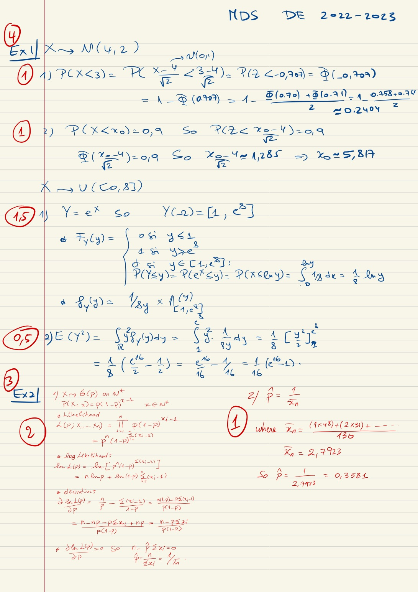
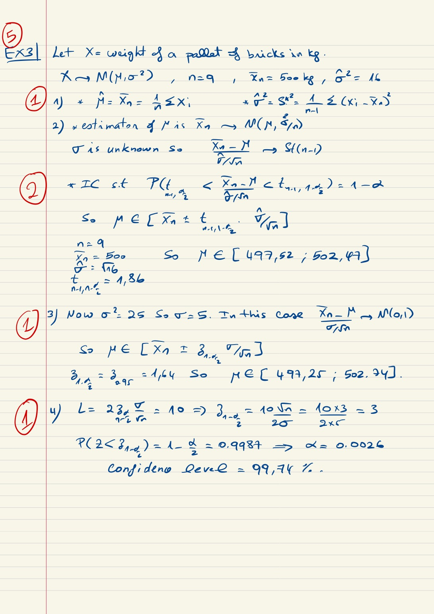
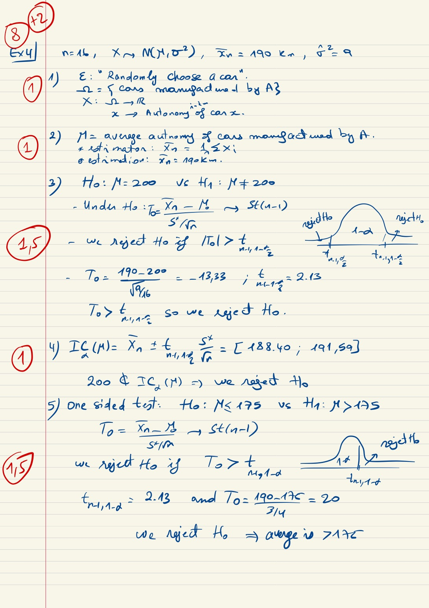
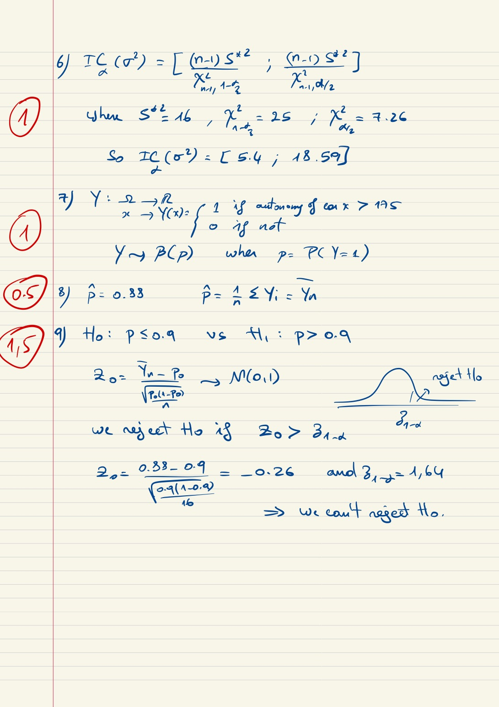
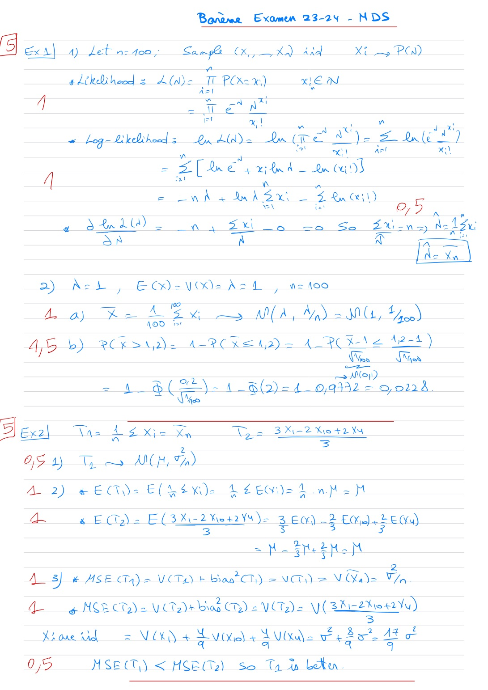
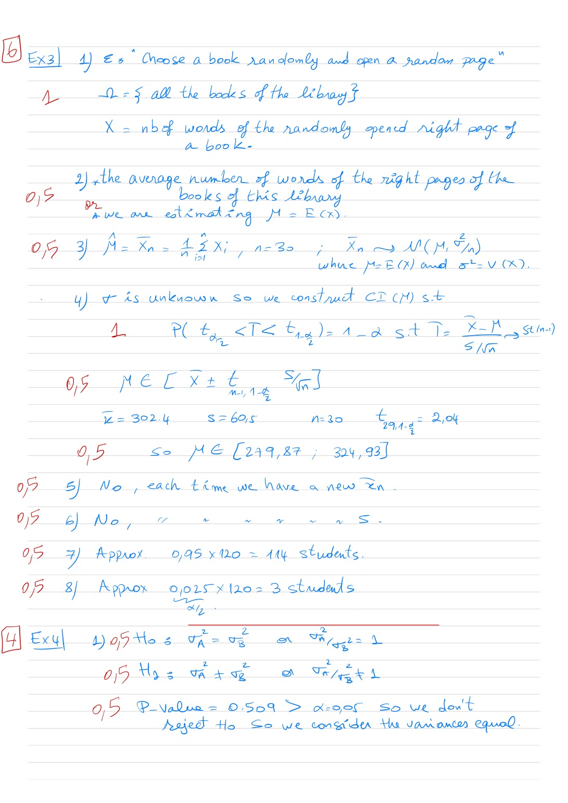
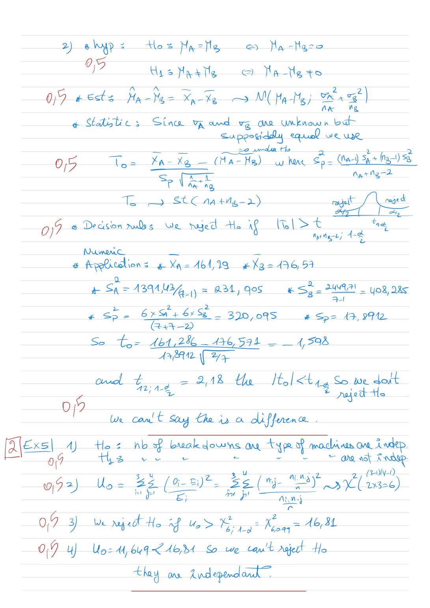

| Sujet | 1 | 2 | 3 | 4 | 5 | 6 | 7 | $\overline{x}$ | $\sum_{i=1}^n (x_i-\overline{x})^2$ |
| Type A | 162 | 163 | 140 | 191 | 160 | 158 | 155 | 161.29 | 1391.43 |
| Type B | 161 | 187 | 199 | 206 | 161 | 160 | 162 | 176.57 | 2449.71 |
Appendix G — Previous exams
G.1 Partial 2022-2023
Exercise 1
Let \(A\) and \(B\) be events such that \(P(A) = 0.2\) and \(P(B) = 0.3\). Find the probability that at least one of the events \(A\) and \(B\) occurs if
\(A\) and \(B\) are mutually exclusive.
\(A\) and \(B\) are independent.
Exercise 2
An urn contains one ball of number -1, two of number 0 and two of number 4. We pick randomly two balls from this urn.
Determine the probability distribution of \(X\) which is the sum of the obtained numbers.
Calculate \(E(X)\).
Exercise 3
Let \((X,Y)\) a pair of random variables with the following joint distribution:
| \(X\)\\(Y\) | -1 | 0 | 1 |
|---|---|---|---|
| 0 | 1/9 | 2/9 | 1/9 |
| 1 | 1/9 | 2/9 | 1/9 |
| 2 | 0 | 1/9 | 0 |
Calculate the marginal distributions of \(X\) and \(Y\).
Calculate the probability that \(Y\) is greater of equal to zero given that \(X\) is 0.
Calculate the covariance of \(X\) and \(Y\).
Are \(X\) and \(Y\) independent ?
Exercise 4
A box contains three transistors \(A\), \(B\) and \(C\). Transistor \(A\) was made by a machine that produces \(3\%\) defected transistors, transistor \(B\) by a machine that produces \(5\%\) defected transistors, and transistor \(C\) by a machine that produces \(7\%\) defected transistors.
Let \(p\) the probability that a randomly chosen transistor is defected. Show that \(p=0.05\).
Ten transistors are chosen randomly (with replacement) from the box. Let \(N\) be the number of defected transistors. What is the distribution of \(N\)? (The answer must be justified and detailed).
Calculate \(P(N=0)\).
What is the expected value of \(N\).
Exercise 5
Let \(X\) a random variable following a Normal distribution \(\mathcal{N}(4,2^2)\).
Calculate \(P(X<3)\).
Find \(x_0\) such that \(P(X < x_0) = 0.9\).
Now let \(X\) following a Uniform distribution on \([0;8]\).
Calculate the density function of \(Y=e^X\).
Calculate the expected value of \(Y^2\).
Exercise 6
A Poisson random variable \(X\) of parameter \(\lambda>0\) has \[P(X=k)=e^{-\lambda} \frac{\lambda^k}{k!} \quad \text{ if } k \in \mathbb{N}\]
Let \((X_n)_{n\in \mathbb{N}^*}\), independent random variables, each follows Poisson distribution of parameter 1. For every \(n\) of \(\mathbb{N}^*\), let \(\overline{X}_n = \displaystyle \frac{1}{n} \sum_{i=1}^n X_i\) and \(S_n = X_1 + \ldots + X_n\).
Apply the Central Limit Theorem (CTL) in this case to deduce the probability distribtion of \(\overline{X}_n\) when \(n\) is big.
What is the probability distribution of \(S_n\) if \(n\) is big.
Deduce that \(\displaystyle \lim_{n \rightarrow +\infty} P(S_n \leq n) = \frac{1}{2}\).
Exercise 7
Let \(X\) a random variable of density function \(f(x) = (\theta+1)x^{\theta} \times \mathbb{1}_{]0,1[}(x)\). What is the Maximum Likelihood Estimator of \(\theta\) ?
Exercise 8
Let \(X_1\) and \(X_2\) two independent random variables of expected value \(\mu\) and variance \(\sigma^2\). Let the following estimators of \(\mu\):
\[\displaystyle {\theta}_1 = \frac{X_1+X_2}{2} \quad \text{ and } \quad {\theta}_2 = \frac{X_1+3X_2}{4}\]
Check if these estimators are biased.
Which one between \({\theta}_1\) and \({\theta}_2\) is better to estimate \(\mu\)?
Solution (Click to expand)
G.2 Final Exam 2022-2023
Exercise 1
Let \(X\) be the duration of use (in hours) of a computer terminal during a working day.
-
Suppose that \(X\) follows a Normal distribution \(\mathcal{N}(4,2)\).
Calculate \(P(X<3)\).
Calculate the number \(x_0\) such that, for \(90\%\) of the days, \(X\) is less than \(x_0\).
-
Suppose that \(X\) follows a Uniform distribution on \([0;8]\).
Determine the density function of \(Y=e^X\).
Calculate the expected value of \(Y^2\).
Exercise 2
Some birds fly after making a few jumps on the ground. It is assumed that the number \(X\) of jumps can be modeled by a Pascal (Geometric) distribution on \(\mathbb{N}^*\):
\[P(X=x)= p(1-p)^{x-1} \quad x \geq 1\]
For \(n=130\) birds of this type, we collected the following data:
| Number of jumps \(x\) | 1 | 2 | 3 | 4 | 5 | 6 | 7 | 8 | 9 | 10 | 11 | 12 |
|---|---|---|---|---|---|---|---|---|---|---|---|---|
| Occurence | 48 | 31 | 20 | 9 | 6 | 5 | 4 | 2 | 1 | 1 | 2 | 1 |
What is the Maximum Likelihood Estimator (MLE) of \(p\)?
Calculate a value of this estimator using the collected data.
Exercise 3
Nine pallets of bricks of the same manufacture were weighed. We obtained an average of 500 kg and a variance of 16.
We admit that the random variable "Weight of a pallet of bricks" follows a Normal distribution of expectation \(\mu\) and variance \(\sigma^2\).
Give an unbiased estimators of \(\mu\) and \(\sigma^2\).
Construct a confidence interval of \(\mu\) of \(90\%\) confidence.
Now suppose that we know the variance, which is given by the constructor \(\sigma^2\) = 25. Recalculate the \(90\%\) confidence interval of \(\mu\).
In this case, what confidence level to choose if we want to have a confidence interval of length 10.
Exercise 4
A car manufacturer called \(A\) decides to market \(100\%\) electric cars. He claims that the average range (autonomy) of its new model is 200 km. The European standard considers a vehicle to be "compliant" if its autonomy is greater than 175 km. A competitor \(B\) would like to verify, on average, the autonomy of manufacturer \(A\)’s cars. He rents 16 cars. Let take \(X\) the random variable corresponding to the range of each tested car. We will suppose that \(X\) follows a Normal distribution of mean \(\mu\) and variance \(\sigma^2\). With the sample data, the manufacturer obtains a mean range of 190 km and an unbiased estimate of the variance of 9.
Describe the random experiment, the population, and the studied random variable.
What does the parameter \(\mu\) represent? Give an estimator and then an estimation of \(\mu\).
Test the hypothesis that the average range is 200 km with confidence \(95\%\).
Explain how to answer the previous question with a two-sided confidence interval for \(\mu\).
Can we say, with a \(2.5\%\) risk of error, that the average range of this model is strictly over 175 km..
-
Give a confidence interval at \(10\%\) for the variance \(\sigma^2\).
The proportion of cars tested with a range of more than 175 km in this sample is of 0.88.
Describe the new random variable studied \(Y\). What is its distribution?
Give a point estimate of the proportion \(p\) of cars that are compliant to the European standard.
Assuming that the sample is large enough to apply the central limit theorem, can we say, with a \(5\%\) risk of error, that the proportion \(p\) of compliant cars in the entire production is strictly greater than 0.90?
Solution (Click to expand)

G.3 Final Exam 2023-2024
Exercise 1
It has been established that the duration \(X\) (in days number units) of a device follows a Poisson distribution with parameter \(\lambda >0\) : \[P(X=k) = \frac{\lambda ^k \exp(-\lambda)}{k!}, \,\, k \in \mathbb{N}\] We consider a random iid sample \((X_1,…,X_{100})\) following the same variable \(X\).
Establish the expression for the maximum likelihood estimator of \(\lambda\).
-
We suppose suppose now that the \(\lambda\) is fixed and is equal to \(1\). So \(E(X)=V(X)=1\):
What is the approximate probability distribution of \(\overline{X} = \frac{1}{100} \sum_{i=1}^{100} X_i\).
Calculate \(P( \overline{X}> 1.2)\).
Exercise 2
Let \(X_1, X_2,.,.,.X_n\) a random sample (iid), of size \(n >10\). The population mean is \(\mu\) and variance is noted \(\sigma^2\) . We define the following estimators of \(mu\):
\[T_1 = \frac{1}{n}\sum_{i=1}^ {n} X_i \quad \text{and} \quad T_2 = \frac{3 X_1 - 2 X_{10} + 2 X_4}{3}\]
Using the CLT, give the distribution of \(T_1\) for large values of \(n\).
Show that \(T_1\) et \(T_2\) are unbiased estimators of \(\mu\).
Between \(T_1\) and \(T_2\) which one is better for estimating \(\mu\).
Exercise 3
A student has been asked to randomly select 30 books from different shelves and heights in the library, open them at random, and count the words on the right-hand page. The student must then calculate a \(95 \%\) confidence interval based on his 30 chosen books.
- Define the random experiment \(\varepsilon\), the population \(\Omega\) and the random variable \(X\) under study.
- What are we trying to estimate with this experiment?
- Propose an estimator of it and give its probability distribution according to the central limit theorem.
- The student has observed a sample with mean \(302.4\) and sample standard deviation \(60.5\). Construct a \(95 \%\) confidence interval for the mean based on this sample.
We now ask 120 students to do the same experiment and calculate a \(95 \%\) confidence interval based on the 30 books chosen.
- Will all 120 intervals be centered on the same value? Justify your answer.
- Will all 120 intervals have the same length? Justify your answer.
- Approximately how many students should have the true value of the parameter in their interval?
- Approximately how many students will significantly overestimate the true value of the parameter, i.e. both bounds of their interval will be greater than the true value?
Exercise 4
Two types of exercise machines for disabled people, A and B, are used to measure the effect of a particular exercise on heart rate (in beats per minute). Normal distribution is considered a good model for both types.
Seven subjects took part in a study to determine whether the two types of device have the same effect on heart rate. The results were as follows.
To determine whether the heart rate differs significantly from one device to another, we first check whether the variances are equal. What is the R function used to perform this test?
The variance comparison test on R gives the following result. What are the test hypotheses and what decision at threshold \(\alpha = 5 \%\) can be made on the basis of this result?
F test to compare two variances
data: x1 and x2
F = 0.568, num df = 6, denom df = 6, p-value = 0.509
alternative hypothesis: true ratio of variances is not equal to 1
95 percent confidence interval:
0.09759794 3.30560002
sample estimates:
ratio of variances
0.5679963 - Perform a hypothesis test to determine whether the heart rate differs significantly from one device to another at the \(5 \%\) threshold, specifying: the hypotheses of the test, the estimator chosen and its probability distribution, the statistic used for this test and its distribution, the \(\mathrm{H}_0\) rejection rule and the final decision.
Exercise 5
A company operates on four machines with three shifts of employees every day. Production reports show the following data on the number of breakdowns
Machines
|
||||
|---|---|---|---|---|
| Equipe | A | B | C | D |
| 1 | 41 | 20 | 12 | 16 |
| 2 | 31 | 11 | 9 | 14 |
| 3 | 15 | 17 | 16 | 10 |
We want to check whether the breakdowns are independent of the team in place, using a \(\chi^2\) test.
- What are the hypotheses \(\mathrm{H}_{0}\) and \(\mathrm{H}_{1}\)?
- What is the test statistic \(U_0\)? What is its distribution?
- What is the rule for rejecting the null hypothesis, using a threshold of \(1 \%\)?
- Given that the observed value of the test statistic is \(11.649\), what can you conclude?
Solution (Click to expand)
